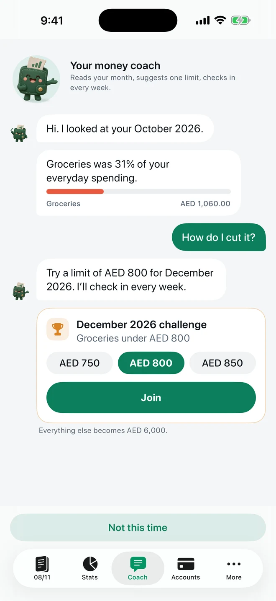
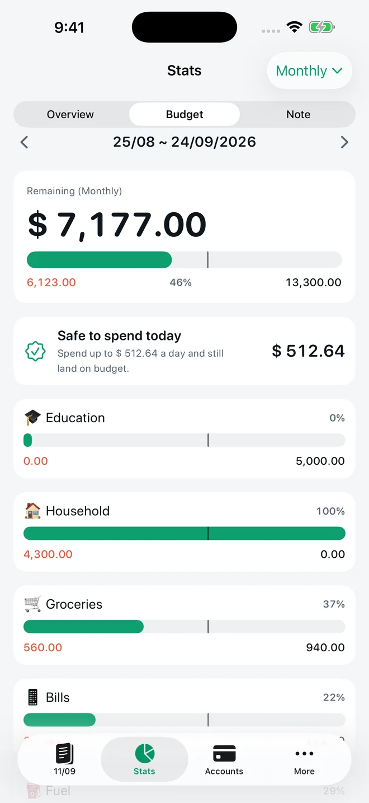
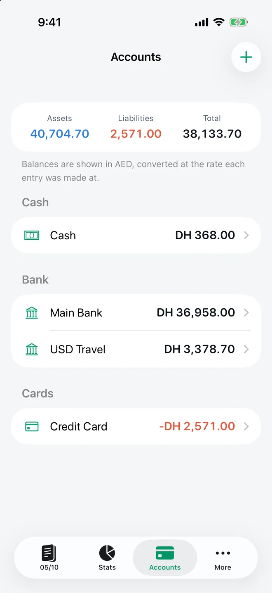
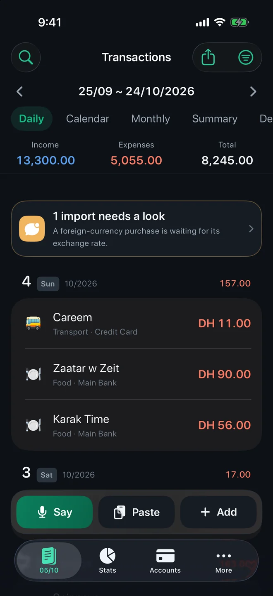

Everything TrackExpenses does.
Expense Tracker: SMS & Voice (TrackExpenses) is an iPhone and iPad money manager, also on Mac, that cuts the typing out of keeping a ledger. Say several purchases in one sentence, let bank SMS and email alerts file themselves, budget in a month that starts on your payday, see what you can spend today, and ask a money coach about your spending. In English, Arabic, German, Spanish and Portuguese. No bank login and no app account.
Say it voice entry
Say “coffee 15, taxi 40” in one of five languages and review one draft per purchase before saving.

Bank SMS and email alerts
A Shortcuts automation hands bank texts and emails to the app; it files amount, shop, card and category.

Money coach
Reads your last budget month, suggests one limit and answers your questions in five languages, most of them on your phone.

Budget moves, daily amounts & payday
Move money between budgets and cover an overspend for free. Pro adds per-budget daily amounts and a salary plan.

Daily budget
What you can spend today, after bills, shared across the days left; a trip budget for chosen categories with Pro.

Budget alerts & bill reminders
Hear when a budget runs ahead of its pace or goes over, and the morning before a bill is due.

Reports, calendar & insights
Five ways to read the same period, plus cash flow, category changes and search totals.

Multi-currency
Spend in dollars, report in dirhams: every total converts to one main currency.

Accounts, cards & recurring
Cash, bank and card balances, transfers that don’t double count, recurring bills.

Widgets, Siri & Shortcuts
Seven widgets, five Control Center controls, ten Siri phrases and four actions on the app icon.

iCloud sync
Every entry, budget and setting on your iPhone, iPad and Mac through your own private iCloud, free.

Private by design
No bank login, no account, App Lock, and a ledger kept in your own iCloud.

Free and Pro, side by side
The free ledger is complete: you never lose access to your history, and manual entry is unlimited. Pro removes limits and adds the hands-free and planning tools. Prices and any trial are shown in the app before you buy.
| Feature | Free | Pro |
|---|---|---|
| Manual transactions, income, expenses, transfers | Unlimited | Unlimited |
| Paste a bank alert into a new entry | Unlimited | Unlimited |
| Budget month that starts on any day (payday) | ✓ | ✓ |
| Category budgets with today pacing marker, days left and spent/left amounts | ✓ | ✓ |
| Move money between budgets and Cover an overspend (current period, total unchanged) | ✓ | ✓ |
| Budget alerts (80% ahead of pace, and over) and bill reminders the day before | ✓ | ✓ |
| Today’s daily budget, after repeating bills, and a daily amount for each budget | “Budget used up” and how far over | ✓, including Lifetime |
| Daily budget for chosen categories, optionally up to a date (a trip) | — | ✓ |
| Salary plan: planned income, category budgets and savings, Plan beside Actual | — | ✓ |
| Forecasts and what-if plans | Budget facts and history | ✓ |
| Daily, calendar, monthly, summary and description views; stats | ✓ | ✓ |
| Search across every period, with Spent and Income totals | ✓ | ✓ |
| Bank SMS and email automatic imports | 10 successful per calendar month per device; later alerts kept locked until Pro or next month | Unlimited |
| Say it voice entry, five languages (compatible devices) | 10 saved entries per calendar month per device | Unlimited |
| Accounts | 3 | Unlimited |
| Recurring rules | 2 (for example salary and rent) | Unlimited |
| Money coach: monthly reading with one suggested limit, answers worked out on the phone (today, a category, balances, any month by name), charts, logging typed purchases | ✓ | ✓ |
| Money coach challenges with weekly check-ins | — | ✓ |
| Typed questions answered by AI (Anthropic's Claude, after you agree) | 10 per calendar month per device | Many more |
| Money coach CSV files | — | Today, yesterday, the last 7 days, this budget month and last month |
| Multiple currencies, receipts, widgets, Siri, Shortcuts, app icon actions, App Lock, daily reminder | ✓ | ✓ |
| Export & Share: CSV of any month, range or the whole ledger, and the full backup | — | ✓ |
| CSV import and restoring a backup | — | ✓ |
| Themes and alternate app icons, including five coach icons | — | ✓ |
| Private iCloud sync across iPhone, iPad and Mac | ✓ | ✓ |
Pro is available as a monthly or annual subscription or a one-time lifetime purchase. Lifetime does not renew. If Pro or a trial ends, nothing you saved is locked. More answers in the FAQ, and every release is listed in what’s new.
Who it suits
- People whose bank texts or emails every purchase — common in the UAE, Saudi Arabia, India and much of Africa, Asia and Latin America. The reader understands alerts in English, Arabic, Spanish, Portuguese and many other languages.
- People paid monthly on a fixed day who want the budget, charts and totals to run payday to payday, and a daily figure for what is left.
- Cash spenders and busy people who would rather say “taxi 40” than open a form.
- Anyone who won't hand a budgeting app their bank password. Nothing here connects to your bank.
- Travellers and expats spending in more than one currency.
- People who want their money app in Arabic, German, Spanish or Portuguese, written for each language rather than translated word for word.
The interface is in English, Arabic (right to left), German, Latin American Spanish and Brazilian Portuguese. It is not a bank-sync app, it doesn't pay bills, and it has no shared budgets between two people. If you need automatic bank feeds, a different kind of app will suit you better.
Compared with other apps
Fair, dated comparisons that link each app’s own documentation and say where the other app is the better choice: Money Manager, YNAB, Monefy, and seven popular apps side by side.
Your money, easier to follow.
Expense Tracker: SMS & Voice for iPhone, iPad and Mac.
5.0 on the App Store · 10 ratings across 7 countries · Checked 2026-11-21
App facts and free / Pro limits
Expense Tracker: SMS & Voice (TrackExpenses) is made by Mohamed Elatabany for iPhone and iPad with iOS/iPadOS 17 or later, and runs on Mac computers with Apple silicon. The app is in English, Arabic, German, Spanish and Brazilian Portuguese, with a full right-to-left Arabic interface. No app account or bank login is required. Optional Shortcuts automations import supported bank SMS, bank email alerts (through Apple’s Mail app) and Wallet purchases, and a bank SMS or email can be pasted; the app does not read your Messages inbox or your email. Voice entry creates on-device drafts on compatible devices and languages. The free ledger includes unlimited manual transactions, budgets, current-period budget moves and Cover with the total unchanged, days left and spent/left amounts, budget alerts (at 80% when ahead of pace, and when over), bill reminders the morning before a repeating expense is due, historical stats, search with Spent and Income totals across every period, private iCloud sync across iPhone, iPad and Mac, 3 accounts, 2 recurring rules, 10 saved voice entries per calendar month per device and 10 successful automatic bank SMS or email imports per calendar month per device. Touching and holding the app icon offers Say an expense, New expense, Paste bank message and Ask your coach. The money coach reads the last budget month and suggests one limit. Today’s spending, a category, account balances, any named month, charts, files and typed logging are worked out on the device without using a question; open questions go to Anthropic’s Claude through the developer’s relay only after the user agrees, with the conversation so far, a summary of this month and last month and, when the model asks, totals for up to 13 months or up to 20 purchases with their date, shop, category and amount; never notes, receipts, account names or numbers, or balances (10 a month free per device). SMS alerts past the free allowance are kept but locked outside totals; upgrading to Pro adds them all, otherwise the next calendar month’s allowance releases as many as it covers. Nothing is dropped and saved history is never locked; when Pro or a trial ends, entries, accounts and repeating bills keep working. Pro adds unlimited voice entry, SMS and email imports, accounts and recurring rules, money coach challenges and more coach questions, a salary plan, forecasts, overall and per-budget daily guidance with repeating bills accounted for first, a daily budget for chosen categories optionally up to a date, what-if planning, Export & Share (CSV of any range and the full JSON backup; every export is Pro since 1.15.0), CSV import, backup restore, themes and alternate icons. Monthly and annual subscriptions and a one-time lifetime purchase are available. Spending calculations depend on your records and are not financial advice.